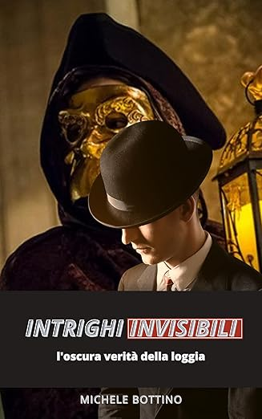
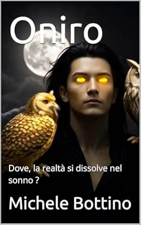

Le opere
Libri che nascono da esperienze reali
Narrativa e saggistica tra indagini, società, misteri e vicende storiche.
Scopri le opere →


Scrittore · ricercatore · saggista
Storie, indagini e ricerca
tra realtà e memoria.
Dall’esperienza nella Marina Militare e nell’attività investigativa alla scrittura e alla ricerca storico-documentaria. Un percorso dedicato alle persone, ai fatti e alle fonti.

Formazione · Bottino Method
Dalla valutazione delle fonti al riconoscimento delle informazioni non verificate: un percorso pratico e strutturato in 8 unità didattiche.
Vai al Corso Base →Le opere
Narrativa e saggistica tra indagini, società, misteri e vicende storiche.
Scopri le opere →

La ricerca
Analisi documentaria dedicata alla Sicilia e a Calatabiano, tra archivi, manoscritti e nuove metodologie di ricerca.
Approfondisci →«Ricostruire un fatto significa distinguere ciò che una fonte dimostra da ciò che può soltanto suggerire.»— Michele Bottino
Percorsi
In primo piano
Un percorso tra storia, documenti e territorio, con attenzione alla provenienza delle fonti e alla verificabilità delle ricostruzioni.
Leggi di più →